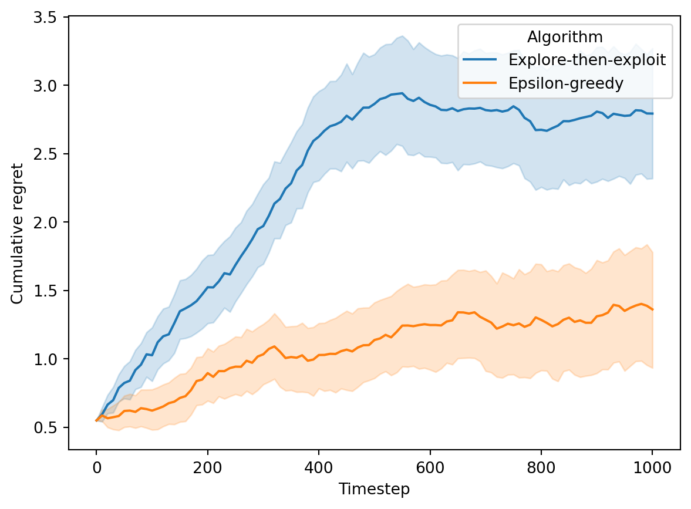

from math import log
from numpy import argmax
class ExploreExploit:
def __init__(self, K, T):
self.K = K
self.N = round(2 * (T**2 * log(T) / K**2)**(1/3))
self.totals = [0] * K
def __str__(self):
return "Explore-then-exploit"
def play(self, t):
'''Choose an arm to play.'''
if t <= self.K*self.N:
# Play each arm N times
return t % self.K
else:
# Play best arm
return self.best
def feedback(self, t, a, r):
'''Receive a reward.'''
if t <= self.K*self.N:
# Record reward
self.totals[a] += r
if t == self.K*self.N:
# Compute best arm
self.best = argmax(self.totals)Probability theory and random variables
Concentration bounds and multi-armed bandits
Here’s the definition; taken from Wikipedia, which in order takes it from Fristedt and Gray (1996, 11).
Definition 1 (Random variable). Let \((\Omega, \mathcal{F}, P)\) be a probability space and \((E, \mathcal{E})\) a measurable space. Then an \((E, \mathcal{E})\)-valued random variable is a measurable function \(X : \Omega \to E\), which measures that, for every subset \(B \in \mathcal{E}\), its preimage is \(\mathcal{F}\)-measurable; \(X^{-1}(B) \in \mathcal{F}\), where \(X^{-1}(B) = \{\omega : X(\omega) \in B\}\).
Ji (2022, Lecture 14)
\begin{algorithm} \caption{Explore-then-exploit} \begin{algorithmic} \Require{$K$ and $T$ (both known), unknown reward distributions $\mathcal{D}_a$.} \For{$t = 1, 2, \ldots$} \State Explore phase: try each arm $N$ times. \State Exploit phase: determine $\tilde{a}$ with the highest average reward; then play $\tilde{a}$ in all remaining rounds. \EndFor \end{algorithmic} \end{algorithm}
\(N = 2 \sqrt[3]{T^2 \log T / K^2}\)
from math import log
from random import random, randrange
from numpy import argmax, divide, errstate, inf, nan
class EpsilonGreedy:
def __init__(self, K, T):
self.K = K
self.totals = [0] * K
self.counts = [0] * K
def __str__(self):
return "Epsilon-greedy"
def _eps(self, t):
return (self.K*log(t)/t)**(1/3)
def _best(self):
with errstate(divide='ignore', invalid='ignore'):
avg = divide(self.totals, self.counts)
avg[avg == inf] = -inf
avg[avg == nan] = -inf
return argmax(avg)
def play(self, t):
'''Choose an arm to play.'''
if random() < self._eps(t):
# Play random arm
return randrange(self.K)
else:
# Play best arm
return self._best()
def feedback(self, t, a, r):
'''Receive a reward.'''
# Record reward
self.totals[a] += r
self.counts[a] += 1from random import random
from numpy.random import normal
from numpy import zeros, cumsum
# Simulation parameters
T = 1000 # Number of rounds
F = 10 # Logging frequency
S = 100 # Number of trials
# Arms to explore
means = [0.5, 0.55]
arms = [random, lambda: normal(means[1], 0.2, 1).item()]
K = len(arms)
# Algorithms to use
algs = [ExploreExploit(K, T), EpsilonGreedy(K, T)]
A = len(algs)
# Evaluate algorithms
rewards = zeros((S, T//F+1, A))
for s in range(S):
for t in range(1, T+1):
for i, alg in enumerate(algs):
a = alg.play(t)
r = arms[a]()
alg.feedback(t, a, r)
if t % F == 0:
rewards[s, t//F, i] = r
regret = cumsum(max(means)-rewards, axis=1)Code for plotting regret
import seaborn as sns
import pandas as pd
# Transform to a format expected by seaborn
df = pd.DataFrame({
"Timestep": [F*((t//A)%(T//F+1)) for t in range(S*(T//F+1)*A)],
"Cumulative regret": regret.flatten(),
"Algorithm": S*(T//F+1)*[str(x) for x in algs],
})
# Plot results
sns.lineplot(data=df, x="Timestep", y="Cumulative regret", hue="Algorithm");
Ji (2022, Lecture 14)
\begin{algorithm} \caption{Epsilon-greedy} \begin{algorithmic} \Require{$K$ and $T$ (both known), unknown reward distributions $\mathcal{D}_a$.} \For{$t = 1, 2, \ldots$} \State Toss a coin with success rate $\epsilon_t$. \If{success} \State Explore: choose an arm uniformly at random. \Else \State Exploit: choose an arm with the highest average reward so far. \EndIf \EndFor \end{algorithmic} \end{algorithm}
Ji (2022, Lecture 15)
\begin{algorithm} \caption{UCB} \begin{algorithmic} \Require{$K$ and $T$ (both known), unknown reward distributions $\mathcal{D}_a$.} \For{$t = 1, 2, \ldots$} \State $a_t = \arg\max_{a \in [K]} \mathrm{UCB}_t (a)$ \EndFor \end{algorithmic} \end{algorithm}
References
Fristedt, Bert E., and Lawrence F. Gray. 1996. A Modern Approach to Probability Theory. Springer Science & Business Media.
Ji, Bo. 2022. “Online Learning and Sequential Decision Making.” CS6104 Advanced Topics in Theory of Computation.